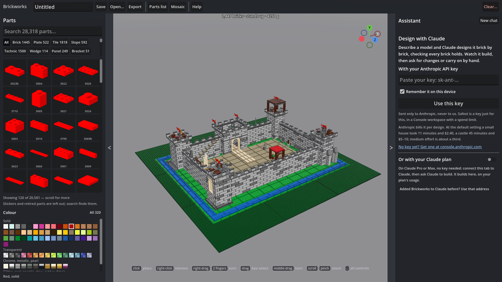
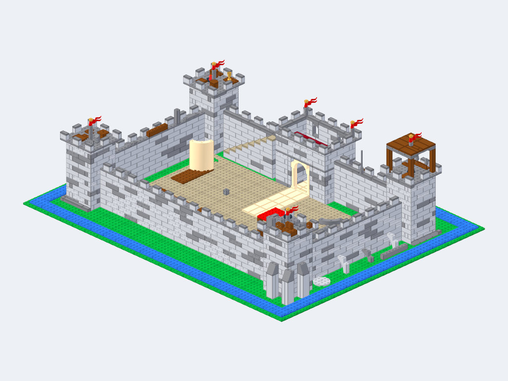

Design it here. Build it on your table.
Say what you want and watch Claude build it from 28,319 real parts, every brick checked to hold — or place them yourself. Then leave with a parts list and printable instructions, because a model you cannot build is a picture.
Free and in your browser, with no account to make. Claude runs on your own Claude plan or API key, billed by Anthropic — never by us.

Design with Claude, on what you already pay for
Brickworks has no accounts and sells nothing. Claude does the designing, and Anthropic bills it the way you already pay for Claude. Pick whichever you have.
Your Claude plan
- In the app, switch on Or with your Claude plan and copy the private address it shows. It stays the same, so you add it once.
- Add it to Claude as a custom connector: on claude.ai or in the Claude app under Settings → Connectors, or in Claude Code:
claude mcp add --transport http brickworks "<the address>" - Ask Claude to “build a small red house in Brickworks”, with the Brickworks tab in view beside it — a browser pauses a tab it isn’t showing. Every step shows in the app as it builds.
Counts against your plan’s usage, like any other chat with Claude.
Your own API key
- Make a key at console.anthropic.com — safest in a workspace of its own, with a spend limit, set to expire.
- Paste it into the app. It is checked with Anthropic before it is kept, in your browser or for this visit only.
- Describe what you want in the app and press Build it. Choose the model and how hard it thinks.
Measured at the default setting: a small house took 11 minutes and $2.40, a castle 45 minutes and $5–10. Medium effort costs about a third.
Either way the model is built in front of you, a brick at a time, and every brick is checked against the real lattice before it is placed — so what Claude designs stands up, and you can build it.
Designed from one sentence
“A medieval castle with a gatehouse, four corner towers and a long curtain wall between them.” The assistant laid it out, checked every brick against the real lattice, then went back over the gatehouse, each tower and each wall on its own, close up, reaching for the parts real castle sets are built from.

What it does
Everything here is built on the exact engine rather than on an approximation of it.
Build by hand
Point at a face and the part goes against it. Positions are whole numbers on a 2 LDU lattice, so a model saved today loads identically tomorrow.
Every part, findable
All 28,319, searchable as you type, previewed from the real geometry in the colour you picked.
Designed like a set
Claude lays a model out, then details each part of it close up, reaching for the pieces real sets of the kind are built from — bonded courses, masonry, windows seated in frames.
Will it stand up?
Live checks for a joint carrying more than its studs hold, a load hanging past its footprint, a build too tall for its base.
Yours to take away
Saved as LDraw .ldr, so it opens in LDView,
LeoCAD, Studio or Mecabricks — and theirs opens here.
Build it for real
A parts list by the lot, which is how a shop sells them, and build steps that print as one page — because you build on a table, not at a screen.
A photograph, in plates
Drop in a picture, get a mosaic in the colours a 1 × 1 plate is really made in — a model like any other, parts list and instructions and all.
Real connections
Studs, tubes, Technic pin holes and axle holes, read from the primitives each part is drawn with rather than guessed from a bounding box.
What Brickworks never sees
There is nothing to sign up for, so there is nothing of yours to keep. What that means for each thing you bring:
Your API key
Kept in your browser, or for this visit only, and sent only to Anthropic. The page’s security policy lets it talk to itself, Anthropic, Wikimedia for reference pictures, and its own parts store — the browser refuses anything else, so a key has nowhere else to go.
Your Claude login
Never asked for. With a connector, Claude is the one calling, signed in its own way. The address is random, made and kept in your browser, and reaches Brickworks only while a tab has the connector switched on. “Make a new address” retires it.
Your conversations
A small relay carries Claude’s tool calls to your tab and the answers back. It knows your tab by a hash of its address, never the address, and deletes each message the moment it is answered.
Your models
Saved in your browser, not on a server. Export them as LDraw
.ldr to keep, share or open in Studio, LeoCAD or
Mecabricks.
Every line of it is open source, so none of this has to be taken on trust.
Measured, not approximated
1 LDU = 0.4 mm exactly. Every dimension was read off the part geometry rather than copied from a reference, and the tests assert them, so a library update cannot move them quietly.
The figures, against the published specification
| Feature | Brickworks | Specification | |
|---|---|---|---|
| Stud pitch | 8.00 mm | 8.0 | exact |
| Brick height | 9.60 mm | 9.6 | exact |
| Plate height | 3.20 mm | 3.2 | exact |
| Stud diameter | 4.80 mm | 4.8 | exact |
| Wall thickness | 1.60 mm | 1.6 | exact |
| 2 × 4 brick | 32.00 × 16.00 mm | 32 × 16 | exact |
| Stud height | 1.60 mm | 1.8 | a convention |
Sizes are nominal rather than as-moulded, which is what makes parts tile exactly instead of leaving a gap that accumulates across a long wall. The stud height is the LDraw library's own convention, and every part follows it.